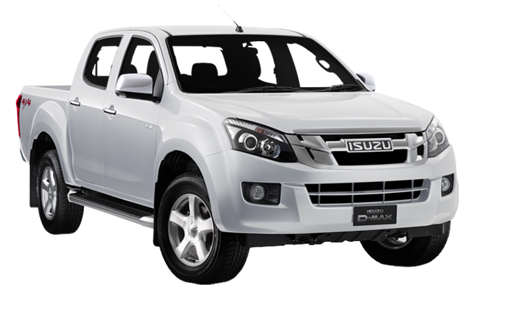

Tüm illere aynı gün içerisinde kargomuz mevcuttur
Isuzu NPR Yedek Parçalar
-
ISUZU NPR TAMPON
ISUZU NPR KARLIK
ISUZU NPR PANJUR
ISUZU NPR PANEL SACI
ISUZU NPR KAPUT
ISUZU NPR ÇAMURLUK
ISUZU NPR ÇAMURLUK DAVLUMBAZI
ISUZU NPR TAMPON BRAKETİ
ISUZU NPR FAR
ISUZU NPR SİNYAL
ISUZU NPR ÖN KAPI
ISUZU NPR ARKA KAPI
ISUZU NPR KAPI FİTİLİ
ISUZU NPR CAM FİTİLİ
ISUZU NPR KAPI AÇMA KOLU
ISUZU NPR STOP LAMBASI
ISUZU NPR ARKA TAMPON
ISUZU NPR BAGAJ KAPAĞI
ISUZU NPR ÖN FREN BALATASI
ISUZU NPR ARKA FREN BALATASI
ISUZU NPR ÖN FREN MERKEZİ
-
ISUZU NPR ARKA FREN MERKEZİ
ISUZU NPR ÖN DİSK
ISUZU NPR ARKA KAMPANA
ISUZU NPR ALT ROTİL
ISUZU NPR ÜST ROTİL
ISUZU NPR ROT BAŞI
ISUZU NPR VİRAJ LASTİĞİ
ISUZU NPR DİREKSİYON POMPASI
ISUZU NPR DİREKSİYON KUTUSU
ISUZU NPR RADYATÖR
ISUZU NPR KALORİFER RADYATÖRÜ
ISUZU NPR ŞAMANDIRA
ISUZU NPR SİNYAL FAR KOLU
ISUZU NPR EL FREN TELİ
ISUZU NPR KİLOMETRE TELİ
ISUZU NPR KAPI KİLİDİ
ISUZU NPR ARKA DEFRANSİYEL
ISUZU NPR KOMPLE ŞANZIMAN
ISUZU NPR MOTOR PARÇALARI
ISUZU NPR SİLİNDİR KAPAK CONTASI
ISUZU NPR TAKIM CONTA
-
ISUZU NPR PİSTON
ISUZU NPR GÖMLEK
ISUZU NPR KRANK
ISUZU NPR YAĞ POMPASI
ISUZU NPR SUBAP TAKIMI
ISUZU NPR SİLİNDİR KAPAĞI
ISUZU NPR PORYA
ISUZU NPR ÇİVİ TAMİR TAKIMI
ISUZU NPR ÖN AMORTİSÖR
ISUZU NPR ARKA AMORTİSÖR
ISUZU NPR MOTOR TAKOZU
ISUZU NPR ŞANZIMAN TAKOZU
ISUZU NPR SİLECEK KOLU
ISUZU NPR AKS
ISUZU NPR FREN ANA MERKEZ
ISUZU NPR SERVO FREN
ISUZU NPR WESTİNGHOUSE
ISUZU NPR SİLECEK CAM SU DEPOSU
ISUZU NPR MARŞ DİNAMOSU
ISUZU NPR ŞARJ DİNAMOSU
ISUZU NPR DEBRİYAJ ÜST MERKEZİ
-
ISUZU NPR DEBRİYAJ ALT MERKEZİ
ISUZU NPR DEBRİYAJ SETİ
ISUZU NPR KABİN TAKOZU
ISUZU NPR ALT SALINCAK
ISUZU NPR ÜST SALINCAK
ISUZU NPR ALT TABLA
ISUZU NPR ÜST TABLA
ISUZU NPR AYNA
ISUZU NPR YAĞ FİLTRESİ
ISUZU NPR YAKIT FİLTRESİ
ISUZU NPR HAVA FİLTRESİ
ISUZU NPR SEDİMENTER
ISUZU NPR TERMOSTAT
ISUZU NPR KEÇE
ISUZU NPR YAĞ MÜŞÜRÜ
ISUZU NPR KİLOMETRE SENSÖRÜ
ISUZU NPR ABS SENSÖRÜ
ISUZU NPR KRANK
ISUZU NPR DİREKSİYON ROT KOLU
Isuzu Yedek Parça Tüm Araçlar
| Marka | Model | ||
|---|---|---|---|
|  |
Isuzu |
Isuzu TFR Isuzu D-MAX Isuzu NKR Isuzu NLR Isuzu NPR75 Isuzu NPR Isuzu NQR |
Isuzu, Mitsubishi ve Toyota araçlarınızın yedek parçası için bizi arayın.
İletişim numaralarımız: